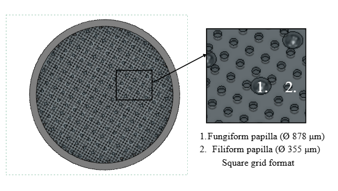
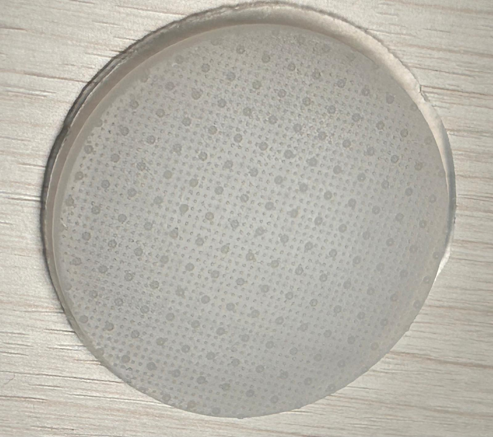
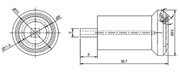
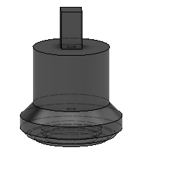

Biomimetic tongue surface & sample holder
Two custom CAD components for an oral tribology test platform to evaluate how different surface(cheese) textures affect friction and wear in oral environments.


What it did
Modelled a negative mould in Fusion 360 replicating human tongue micro-topography — two distinct papillae geometries at physiologically accurate dimensions and densities, based on published morphology data. Designed for SLA printing and silicone casting.
💭 Design reasoning
- Modelled the mould as a negative cavity rather than the papillae surface directly, since casting requires the inverse geometry — a decision driven by the fabrication method (SLA print → silicone cast).
- Preserved two distinct papillae shapes rather than simplifying to one generic bump: spreading load differently — consistent with filiform papillae's role in grip and food manipulation rather than sensing.
- Selected Ecoflex 00-30 silicone specifically for its compliance, verified via compression testing to approximate real tongue tissue stiffness — a stiffer material would have under-represented the soft, deformable contact behaviour that oral tribology is trying to measure.
- Sized the mould at 40mm diameter, 3mm depth to match the UMT tribology platform's fixture — a constraint from the equipment, not an arbitrary choice.
- Chose SLA printing over manually drilling individual cavities (the approach used in prior literature): SLA reproduces the full array with repeatable geometry in one step.
What changed
Turned a 2D literature dataset into a working physical surface with the correct micro-geometry and correct mechanical compliance — replacing what would otherwise have been a generic, flat, overly stiff test surface with no basis in real tongue anatomy or behaviour.
Who benefited
Anyone using the rig gets physiologically realistic, repeatable contact conditions, making resulting friction/texture measurements more trustworthy and comparable to real oral processing.
✓ Outcome
Profilometry comparison of the fabricated silicone surface against the original CAD confirmed the papillae dimensions translated accurately from digital design to physical part, validating that the fabrication process preserved the intended micro-geometry.


What it did
Designed a holder with a recessed cavity controlling sample protrusion (~1.2mm) and a tapered shaft for self-aligning, even clamping within the rig's collet system.
💭 Design reasoning
- The shaft uses a tapered profile — larger diameter at the base, narrowing toward the tip — the same self-centering principle used in Morse tapers and collet systems. As the shaft seats into the collet, the taper wedges into alignment automatically, converting axial clamping force into consistent radial grip without needing a separate centering step.
- Sample left slightly protruding to guarantee contact at a known, repeatable point rather than against the holder itself.
- Designed for SLA printing in rigid resin rather than a softer material, since the holder needed to stay dimensionally stable under repeated clamping — compliance needed to come from the sample being tested, not the fixture.
What changed
Removed manual, inconsistent sample placement — position, depth, and alignment became mechanically fixed rather than hand-set each trial.
Who benefited
Anyone running repeated trials gets comparable data across runs, since mounting variability is no longer a confounding factor in the results.
✓ Outcome
The holder performed reliably across repeated test cycles, maintaining consistent sample positioning and enabling reproducible contact conditions trial to trial.